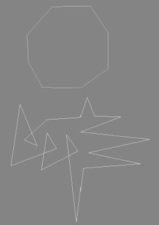
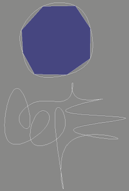
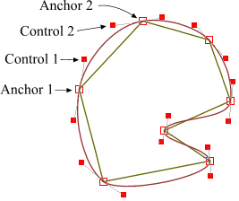
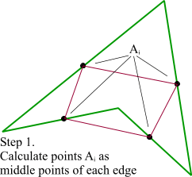
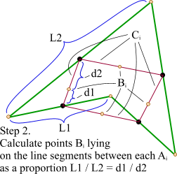
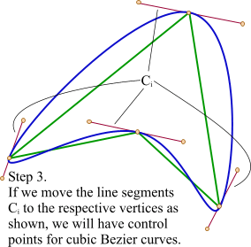
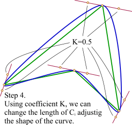

| Home/ |
| Research/ |
|
|
|
|
Interpolation with Bezier Curves |
Initially, there was a question in
|
  |

But I had a gut feeling that there must be a simpler method.
For example, approximation with cubic Bezier curves.
A Bezier curve has two anchor points (begin and end) and two
control ones (CP) that determine its shape.
More information about Bezier curves can be found using any
|
 Finally, I found a very simple method that does not require any complicated math. First, we take the polygon and calculate the middle points Ai of its edges. |
 Here we have line segments Ci that connect two points Ai of the adjacent segments. Then, we should calculate points Bi as shown in this picture. |
 The third step is final. We simply move the line segments Ci in such a way that their points Bi coincide with the respective vertices. That's it, we calculated the control points for our Bezier curve and the result looks good. |
 One little improvement. Since we have a straight line that determines the place of our control points, we can move them as we want, changing the shape of the resulting curve. I used a simple coefficient K that moves the points along the line relatively to the initial distance between vertices and control points. The closer the control points to the vertices are the sharper figure will be obtained. |
Below is the result of rendering a popular in |
|
And the enlarged ones. |
|
The method works quite well with self-intersecting polygons. The examples below show that the result is pretty interesting. |
This method is pure heuristic and empiric. It probably gives a wrong result from the point of view of strict mathematical modeling. But in practice the result is good enough and it requires absolute minimum of calculations. Below is the source code that has been used to generate the lions shown above. It's not optimal and just an illustration. It calculates some variables twice, while in real programs we can store and reuse them in the consecutive steps. |
// Assume we need to calculate the control
// points between (x1,y1) and (x2,y2).
// Then x0,y0 - the previous vertex,
// x3,y3 - the next one.
double xc1 = (x0 + x1) / 2.0;
double yc1 = (y0 + y1) / 2.0;
double xc2 = (x1 + x2) / 2.0;
double yc2 = (y1 + y2) / 2.0;
double xc3 = (x2 + x3) / 2.0;
double yc3 = (y2 + y3) / 2.0;
double len1 = sqrt((x1-x0) * (x1-x0) + (y1-y0) * (y1-y0));
double len2 = sqrt((x2-x1) * (x2-x1) + (y2-y1) * (y2-y1));
double len3 = sqrt((x3-x2) * (x3-x2) + (y3-y2) * (y3-y2));
double k1 = len1 / (len1 + len2);
double k2 = len2 / (len2 + len3);
double xm1 = xc1 + (xc2 - xc1) * k1;
double ym1 = yc1 + (yc2 - yc1) * k1;
double xm2 = xc2 + (xc3 - xc2) * k2;
double ym2 = yc2 + (yc3 - yc2) * k2;
// Resulting control points. Here smooth_value is mentioned
// above coefficient K whose value should be in range [0...1].
ctrl1_x = xm1 + (xc2 - xm1) * smooth_value + x1 - xm1;
ctrl1_y = ym1 + (yc2 - ym1) * smooth_value + y1 - ym1;
ctrl2_x = xm2 + (xc2 - xm2) * smooth_value + x2 - xm2;
ctrl2_y = ym2 + (yc2 - ym2) * smooth_value + y2 - ym2;
|
|
// Number of intermediate points between two source ones, // Actually, this value should be calculated in some way, // Obviously, depending on the real length of the curve. // But I don't know any elegant and fast solution for this // problem. #define NUM_STEPS 20 void curve4(Polygon* p, double x1, double y1, //Anchor1 double x2, double y2, //Control1 double x3, double y3, //Control2 double x4, double y4) //Anchor2 { double dx1 = x2 - x1; double dy1 = y2 - y1; double dx2 = x3 - x2; double dy2 = y3 - y2; double dx3 = x4 - x3; double dy3 = y4 - y3; double subdiv_step = 1.0 / (NUM_STEPS + 1); double subdiv_step2 = subdiv_step*subdiv_step; double subdiv_step3 = subdiv_step*subdiv_step*subdiv_step; double pre1 = 3.0 * subdiv_step; double pre2 = 3.0 * subdiv_step2; double pre4 = 6.0 * subdiv_step2; double pre5 = 6.0 * subdiv_step3; double tmp1x = x1 - x2 * 2.0 + x3; double tmp1y = y1 - y2 * 2.0 + y3; double tmp2x = (x2 - x3)*3.0 - x1 + x4; double tmp2y = (y2 - y3)*3.0 - y1 + y4; double fx = x1; double fy = y1; double dfx = (x2 - x1)*pre1 + tmp1x*pre2 + tmp2x*subdiv_step3; double dfy = (y2 - y1)*pre1 + tmp1y*pre2 + tmp2y*subdiv_step3; double ddfx = tmp1x*pre4 + tmp2x*pre5; double ddfy = tmp1y*pre4 + tmp2y*pre5; double dddfx = tmp2x*pre5; double dddfy = tmp2y*pre5; int step = NUM_STEPS; // Suppose, we have some abstract object Polygon which // has method AddVertex(x, y), similar to LineTo in // many graphical APIs. // Note, that the loop has only operation add! while(step--) { fx += dfx; fy += dfy; dfx += ddfx; dfy += ddfy; ddfx += dddfx; ddfy += dddfy; p->AddVertex(fx, fy); } p->AddVertex(x4, y4); // Last step must go exactly to x4, y4 } |
You can download a working application for Windows that renders the lion,
rotates and scales it, and generates random polygons.
|
 comp.graphic.algorithms
comp.graphic.algorithms Interpolation with Bezier curves (bezier_interpolation.zip)
Interpolation with Bezier curves (bezier_interpolation.zip)